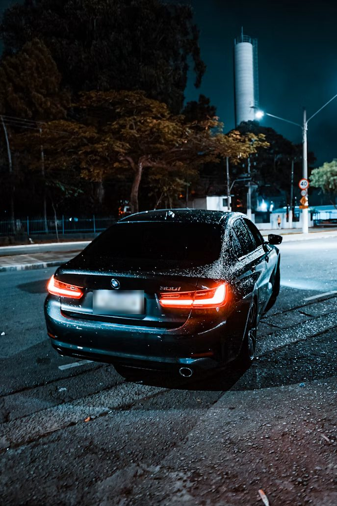
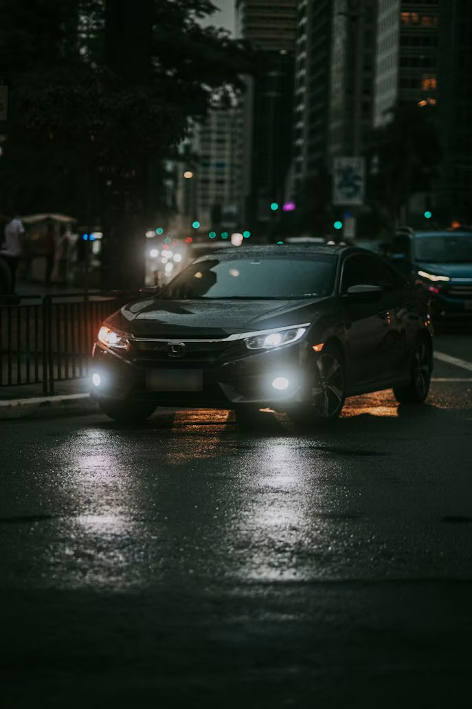
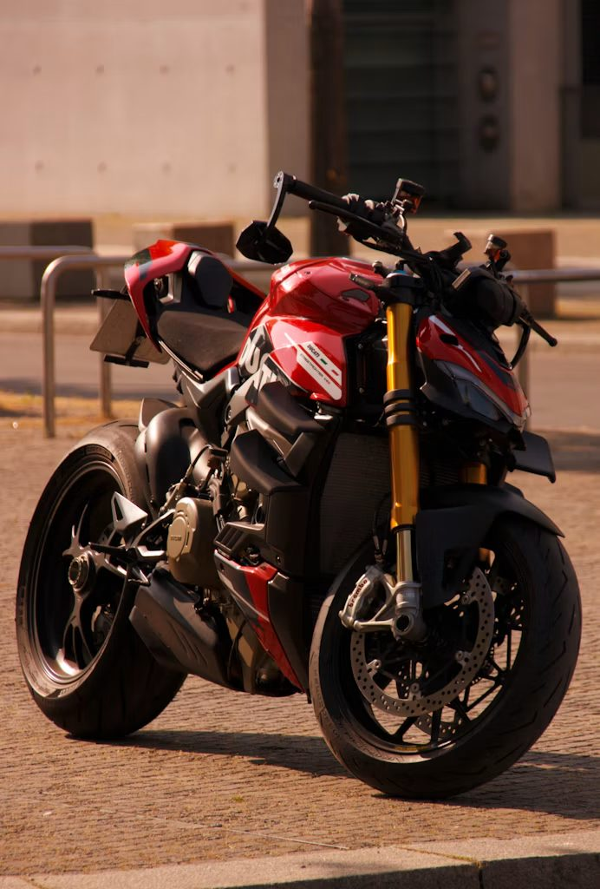
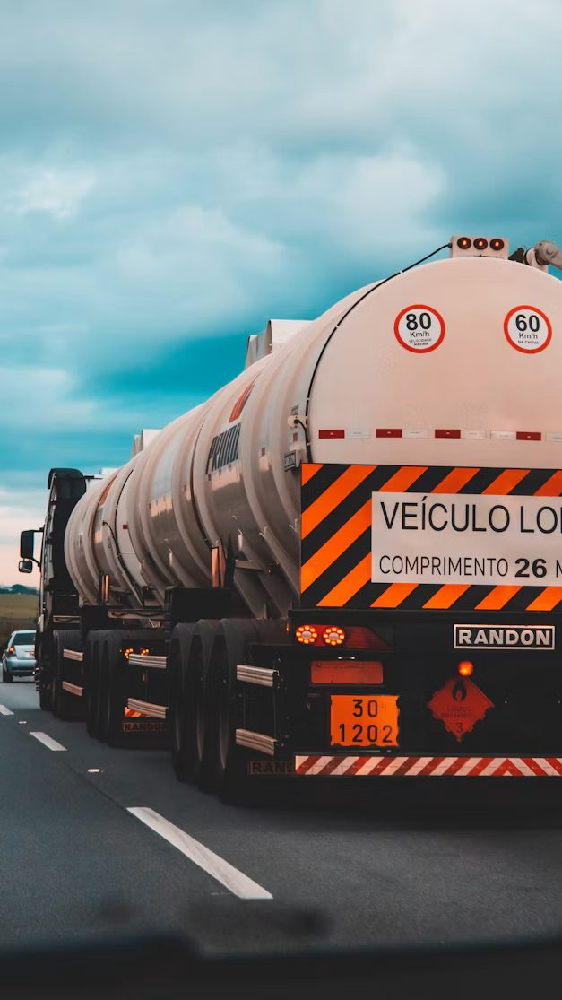
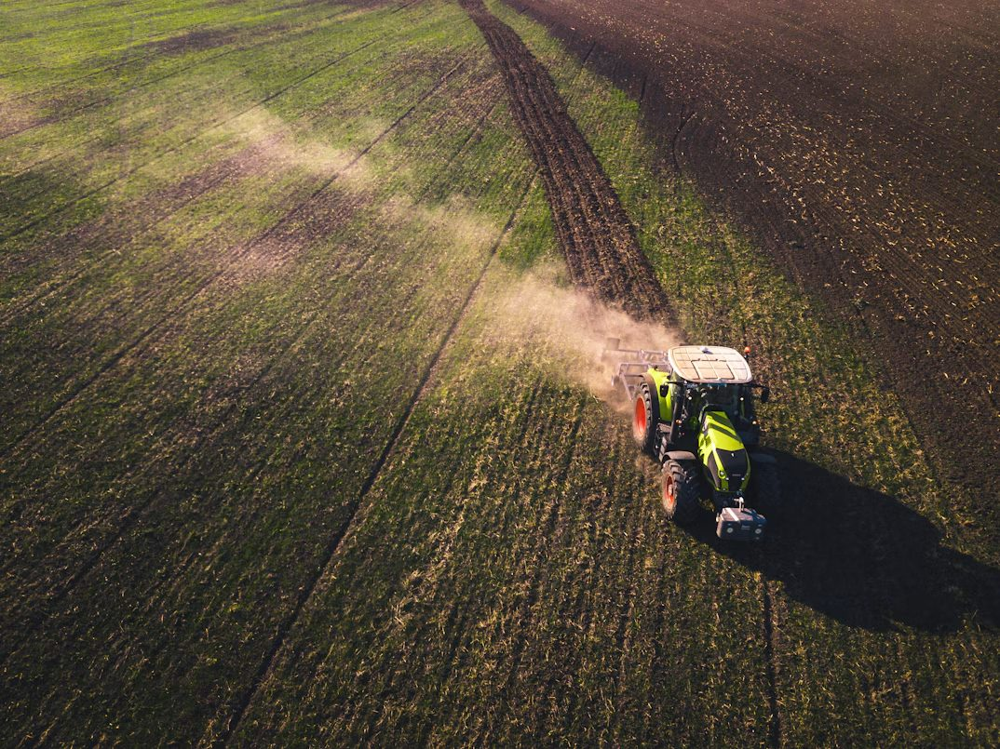
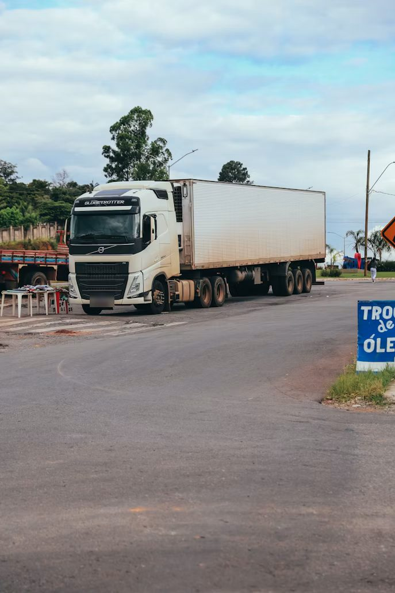
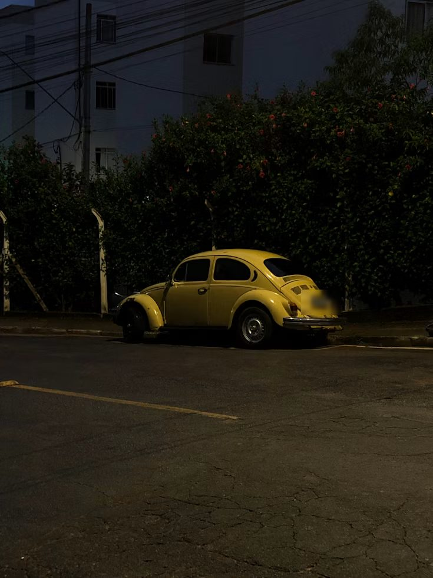

Central Aradsat, Votuporanga/SP
Seu veículo nunca roda sozinho.
Rastreamento, câmera antifadiga e central de monitoramento para carro, moto, caminhão, máquina e frota.
- 15+
- anos rastreando na região
- ISO 9001
- processos certificados
- 7 dias
- plantão para desbloqueio e socorro
- App
- tudo no celular, a qualquer hora
Um veículo some em minutos. O que define se ele volta é o que acontece logo depois.

Você sabe onde está
Localização em tempo real no app, com histórico de cada trajeto.
Você decide se ele anda
Bloqueio remoto ou automático, quando sair da cerca eletrônica.
Alguém está de olho
Central em horário comercial e plantão no fim de semana.
Para tudo que tem motor
Escolha o veículo e veja o que entra na proteção.
Carro

- Localização em tempo real
- Bloqueio remoto
- Cerca eletrônica na garagem
- Apoio na recuperação
Moto

- Rastreador compacto e discreto
- Localização em tempo real
- Bloqueio remoto
- Apoio na recuperação
Caminhão

- SAT CAM: fadiga, celular, cigarro e cinto
- Telemetria de velocidade e frenagem
- Rota, paradas e jornada
- Cerca em pátios e postos
Máquina

- Horas de uso por máquina
- Localização no campo ou na obra
- Alerta de uso fora do horário
- Relatórios de operação
Frota

- Todos os veículos no mesmo mapa
- Relatórios por motorista e veículo
- Grupos e cercas por operação
- SAT CAM e telemetria
Uma noite na SP-320
Caminhão 07 sai de Votuporanga sentido Jales. Role a página e acompanhe o que a central vê.
-
Saída do pátio
O rastreador entra em ação junto com o motor. No app, o gestor vê o caminhão no mapa e o trajeto sendo desenhado.
-
Frenagem brusca registrada
A telemetria grava velocidade, frenagens e tempo de motor ligado. No dia seguinte, isso vira relatório para cortar gastos com combustível e manutenção.
-
SAT CAM percebe o cansaço
A câmera da cabine detecta bocejos e olhar fora da pista. O motorista e o gestor recebem o alerta, e ele para no posto para descansar.
Teste a SAT CAM com a sua câmera -
O caminhão saiu da cerca
Com o motorista dormindo, o caminhão deixa a área do posto. A cerca eletrônica dispara o alerta na central e no celular do gestor.
Desenhe uma cerca e veja acontecer -
Bloqueio remoto
A central confirma com o gestor e bloqueia o veículo. Dois minutos entre o alerta e a ação.
-
Recuperado
Com a localização exata em mãos, a equipe apoia a recuperação. Caminhão e carga de volta antes do dia clarear.
Não precisa acreditar na gente. Teste.
A central no seu bolso
O mesmo que a central vê, você vê no celular pelo app Trackernet. Para entrar, use CPF, CNPJ, e-mail, celular ou até a placa do veículo.
Baixar na App StoreDo primeiro contato ao app, sem enrolação
Conversa
Você conta qual é o veículo e como é a rotina, pelo WhatsApp ou pelo montador do site.
Proposta
Recebe o plano certo para o seu caso, com valores claros.
Instalação
Equipe técnica instala o equipamento e testa tudo na hora.
Controle
Acesso liberado no app. Seu veículo aparece no mapa.
Perguntas frequentes
Não achou sua resposta? Chame no WhatsApp.
Quanto custa o rastreamento?
Depende do veículo e dos recursos. Monte sua proteção no site ou chame no WhatsApp e receba o valor do seu caso.
Preciso ter uma frota para contratar?
Não. Atendemos desde um único carro ou moto até frotas inteiras.
Como acompanho meu veículo?
Pelo app Trackernet. Você entra com CPF, CNPJ, e-mail, celular ou placa e vê mapa, eventos, cercas e financeiro.
E se precisar de ajuda no fim de semana?
Aos sábados e domingos, o plantão atende pelo WhatsApp (17) 99722-1920 para desbloqueio, apoio e socorro.
A SAT CAM funciona em carro de passeio?
Ela foi pensada para quem passa horas ao volante, como caminhoneiros e motoristas de frota. Identifica fadiga, celular, cigarro, olhar fora da pista e falta de cinto. Fale com a gente para avaliar o seu caso.
